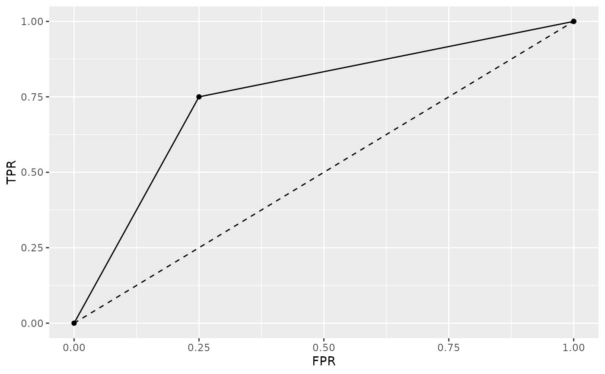
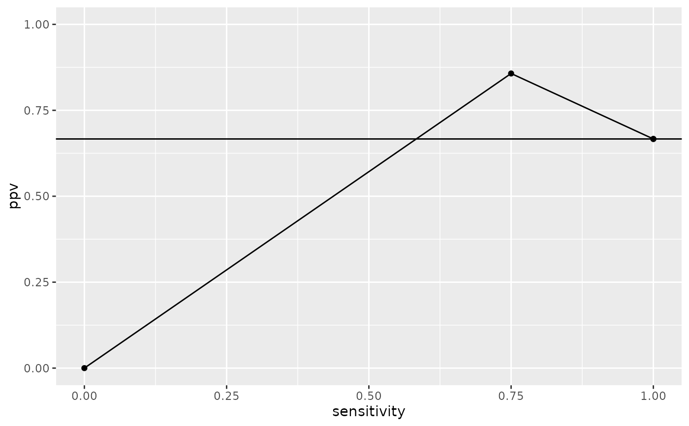
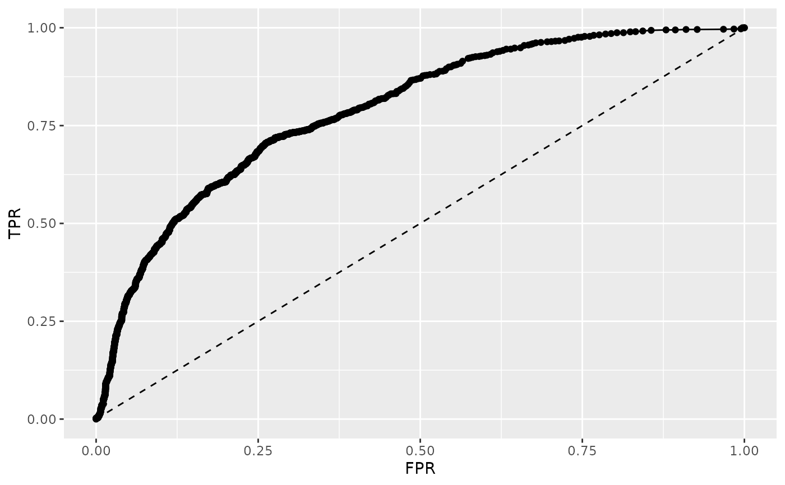
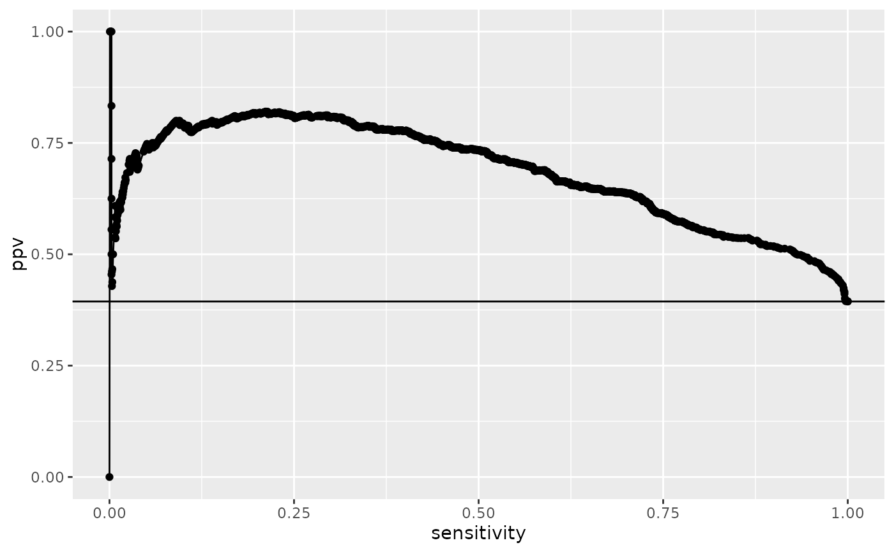

Construction of ROC and PRC data and plots.
Usage
qroc(x, ...)
# Default S3 method
qroc(x, ...)
# S3 method for class 'qwraps2_confusion_matrix'
qroc(x, ...)
# S3 method for class 'glm'
qroc(x, ...)
qprc(x, ...)
# Default S3 method
qprc(x, ...)
# S3 method for class 'qwraps2_confusion_matrix'
qprc(x, ...)
# S3 method for class 'glm'
qprc(x, ...)Value
a ggplot. Minimal aesthetics have been used so that the user may modify the graphic as desired with ease.
Details
The area under the curve (AUC) is determined by a trapezoid approximation for both the AUROC and AUPRC.
More details and examples for graphics within qwraps2 are in the vignette(“qwraps2-graphics”, package = “qwraps2”)
Examples
#########################################################
# Example 1
df <-
data.frame(
truth = c(1, 1, 1, 1, 1, 1, 1, 1, 0, 0, 0, 0)
, pred = c(1, 1, 1, 1, 1, 1, 0, 0, 1, 0, 0, 0)
)
cm <- confusion_matrix(df$truth, df$pred)
qroc(cm)

qprc(cm)

#########################################################
# Getting a ROC or PRC plot from a glm object:
mod <- glm(
formula = spam ~ word_freq_our + word_freq_over + capital_run_length_total
, data = spambase
, family = binomial()
)
qroc(mod)

qprc(mod)

#########################################################
# View the vignette for more examples
if (FALSE) { # \dontrun{
vignette("qwraps2-graphics")
} # }